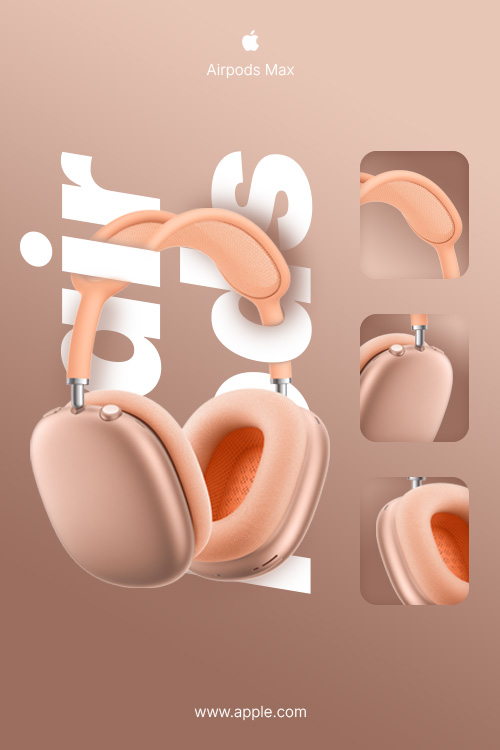
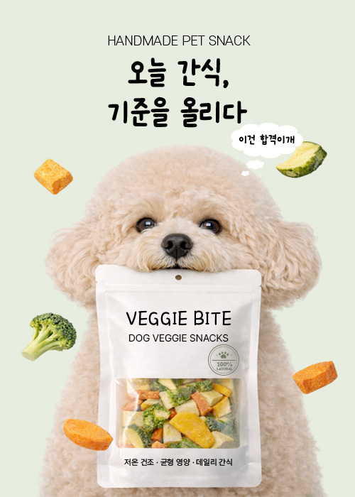
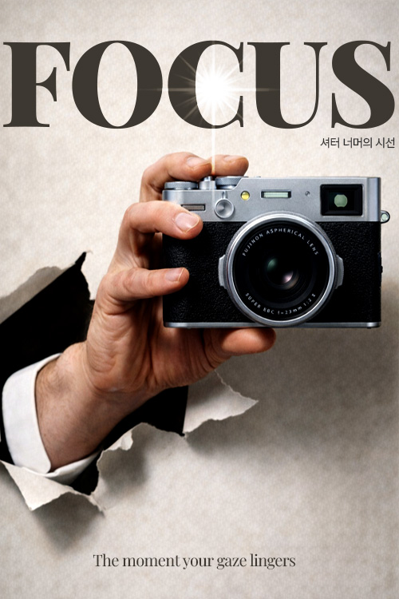
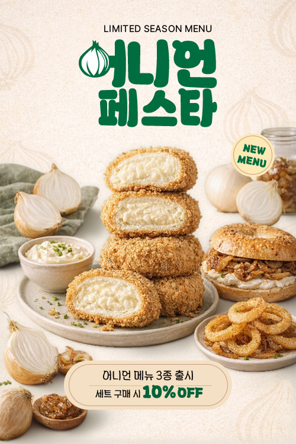
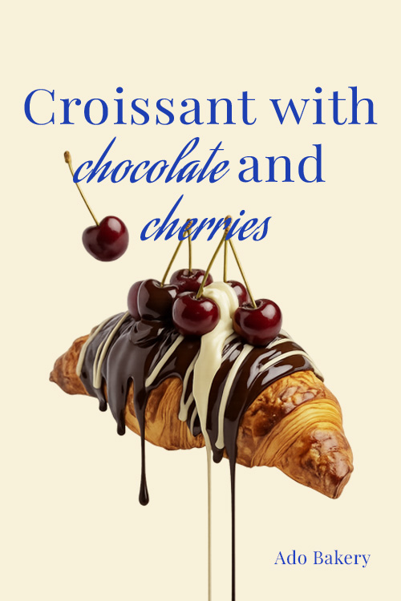
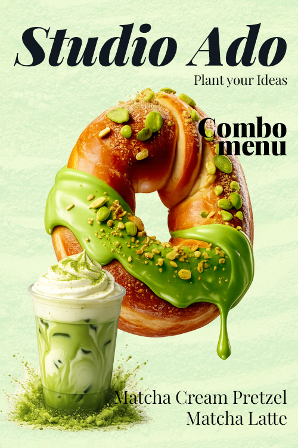
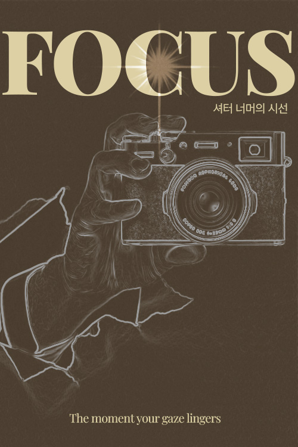

Banner Designs
Eye-Catching Visuals
1920×700 px의 넓은 화면 비율을 고려해, 첫 인상에서 핵심 메시지가 명확하게 전달되도록 시각적 흐름을 설계했습니다.


Hello, I'm
Web Designer
디자인은 단순한 시각적 표현이 아니라, 사용자 경험과 목적을 기반으로 명확한 이유를 가져야 한다고 생각합니다.
사용자의 흐름을 고려한 UI를 설계하고, Figma와 Photoshop, Illustrator를 활용해 이를 구현할 수 있습니다.
더 나은 사용자 경험은 문제를 정확하게 정의하는 것에서 시작된다고 생각합니다. 사용자의 행동을 관찰하고, 그 안에서 숨겨진 불편의 이유를 발견합니다.
사용자의 입장에서 행동과 경험을 이해하고, 그 안에서 발생하는 불편과 니즈를 발견하며 더 나은 방향으로 개선하고자 합니다.
단순히 시각적인 결과물에 그치지 않고, 문제의 원인을 분석하고 논리적인 근거를 바탕으로 효과적인 해결 방안을 도출하는 데 집중합니다.
피사용자의 행동을 세밀하게 관찰하고, 그 안에서 문제의 원인을 파악하며 의미 있는 인사이트를 도출합니다.
사용자의 경험을 설계하는 과정은 단순한 디자인을 넘어, 흐름을 구조화하는 일이라고 생각합니다. 리서치와 분석을 기반으로, 더 나은 방향을 끊임없이 고민하며 구체화합니다.
다양한 디바이스 환경에서도 일관된 경험을 제공할 수 있도록 유연한 레이아웃과 구조를 설계합니다.
문제의 원인을 구조적으로 분석하고, 명확한 근거를 바탕으로 최적의 해결 방안을 도출합니다
사용자의 행동과 맥락을 고려하여 자연스럽고 끊김 없는 경험 흐름을 설계합니다.
취득한 자격증
UX 기획부터 UI 디자인, 퍼블리싱까지 전 과정을 기반으로 일관된 사용자 경험을 구현할 수 있습니다. 각 단계의 흐름을 이해하고, 목적에 맞는 결과물로 연결할 수 있습니다.
사용자 경험을 기반으로 UI 설계와 와이어프레임, 프로토타입 제작을 수행하고 컴포넌트를 활용해 협업 효율을 높일 수 있습니다.
팝업, 배너, 상세페이지, 포스터 등 다양한 콘텐츠 제작과 이미지 보정 및 합성을 통해 완성도 높은 비주얼 디자인을 구현할 수 있습니다.
아이콘, 로고 등 벡터 기반 그래픽 제작을 통해 브랜드 아이덴티티를 일관성 있게 시각적으로 표현할 수 있습니다.
웹 표준과 접근성을 고려한 시맨틱 마크업으로 검색 엔진에 최적화된 구조를 설계하고 사용자 중심의 정보 구조를 구성할 수 있습니다.
미디어 쿼리를 활용한 반응형 웹과 다양한 레이아웃을 구현하고 트랜지션 및 애니메이션을 통해 인터랙티브한 사용자 경험을 제공할 수 있습니다.
Vanilla JS를 활용해 슬라이더, 모달, 스크롤 애니메이션 등 인터랙션을 구현하고 ES6+ 문법 기반의 가독성 높은 코드를 작성할 수 있습니다.
프로젝트 변경 사항을 버전별로 관리하고 브랜치 생성 및 병합을 통해 기능을 독립적으로 개발할 수 있습니다.
로컬 작업물을 원격 저장소에 공유해 협업할 수 있으며, GitHub Pages를 활용해 정적 웹 사이트를 배포하고 프로젝트를 외부에 공개할 수 있습니다.
디자인 가이드라인과 회의 내용을 체계적으로 정리하고 문서화하여, 기록을 기반으로 한 명확한 커뮤니케이션과 효율적인 협업을 이끌 수 있습니다.
Eye-Catching Visuals
500×500 px의 제한된 영역 안에서, 짧은 노출에도 핵심 메시지가 빠르게 전달될 수 있도록 시각적 흐름을 설계했습니다.

에어팟 맥스의 우아한 곡선과 따뜻한 색감을 과감한 타이포그래피 레이어링으로 표현하여 제품의 심미적 가치를 극대화했습니다.
디테일 컷을 활용한 체계적인 레이아웃으로 시각적 위계를 정립하고, 브랜드 특유의 미니멀한 감성을 현대적인 무드로 완성했습니다.

반려견의 생동감 넘치는 표정과 원물 오브제를 조화롭게 배치하여 '신뢰할 수 있는 건강한 간식'이라는 메시지를 직관적으로 담았습니다.
타겟 소비자의 공감을 끌어내는 위트 있는 요소(말풍선)와 편안한 컬러감을 사용하여 브랜드에 대한 친밀도를 높이는 데 집중했습니다.

종이를 뚫고 나오는 입체적인 연출을 통해 피사체를 향한 강렬한 몰입감과 찰나의 순간을 감각적으로 표현했습니다.
강한 대비를 이루는 타이포그래피와 오브제 레이어링을 활용하여 사진전의 주제 의식을 직관적이고 임팩트 있게 전달했습니다.

제품의 바삭한 튀김옷과 부드러운 속 크림의 질감을 시각적으로 극대화하여 소비자의 식욕을 즉각적으로 자극하고자 했습니다.
주재료인 양파와 세 가지 신메뉴를 조화롭게 배치하여 시각적 위계를 확립했으며, 녹색 타이포그래피로 신선하고 트렌디한 브랜드 이미지를 연출했습니다.

베이커리의 대표 메뉴를 소개하기 위해 초콜릿이 흐르는 역동적인 연출과 선명한 체리 오브제로 제품의 특징을 시각적으로 구현했습니다.
클래식한 세리프체와 필기체를 조합한 타이포그래피 레이아웃을 통해 브랜드의 감성을 강조하고, 감각적인 시각 정보 전달에 집중했습니다.

프레첼과 라떼의 세트 구성을 직관적으로 전달하기 위해, 흘러내리는 소스의 질감과 색감을 강조하여 시각적 몰입감을 높였습니다.
메인 오브제 중심의 시각적 위계 설정과 안정적인 타이포그래피 배치를 통해 정보 전달력과 브랜드의 감각적인 무드를 동시에 확보했습니다.

카메라와 손의 형태를 섬세한 라인 아트로 표현하여, 찰나를 포착하기 위해 집중하는 사진가의 내면과 본질적인 시선을 시각화했습니다.
톤온톤 컬러의 사용과 절제된 그래픽 연출로 전시의 깊이감을 더했으며, 타이포그래피에 빛 반사 효과를 주어 시각적 포인트를 명확히 설정했습니다.
카멜리아 향과 진정 효과라는 제품 특성에 맞춰, 이끼 낀 고목과 맑은 물의 반영을 활용해 생동감 넘치는 자연의 순수함을 시각화했습니다.
다양한 자연 오브제를 조화롭게 배치하는 공간 구성 능력과, 제품의 투명한 질감을 살린 정교한 합성 기술을 통해 브랜드가 추구하는 친환경적 가치를 전달했습니다.
Eye-Catching Visuals
사용자의 시선을 고려해 핵심 메시지가 효과적으로 전달되도록 설계했으며, 500×700 px 사이즈로 제작했습니다.
Eye-Catching Visuals
1920×700 px의 넓은 화면 비율을 고려해, 첫 인상에서 핵심 메시지가 명확하게 전달되도록 시각적 흐름을 설계했습니다.
Eye-Catching Visuals
AI 어시스턴트와 포토샵, 일러스트레이터를 활용하여 가상의 상품 상세페이지를 기획 및 디자인했습니다.